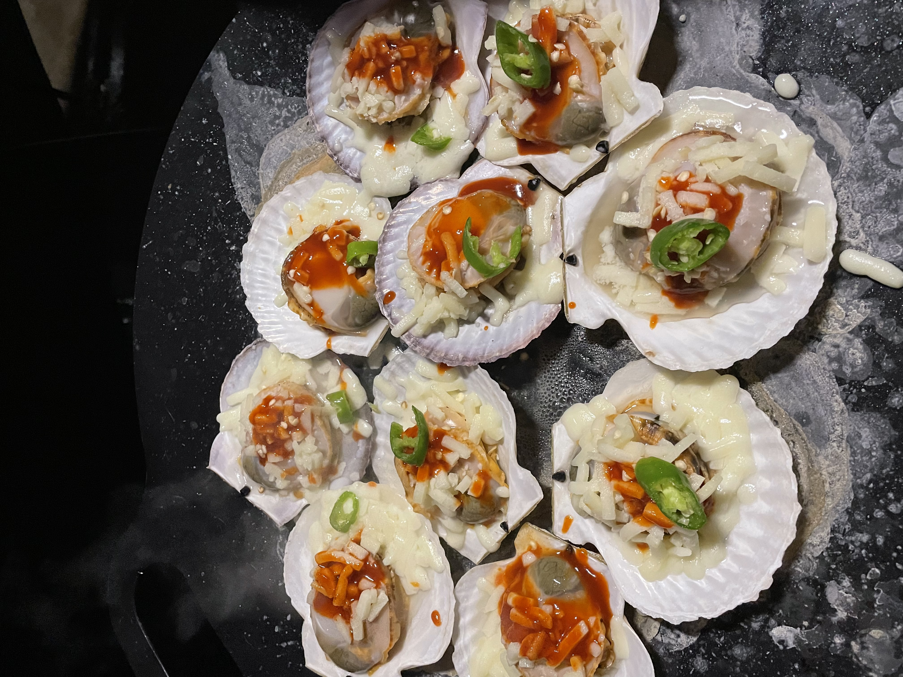
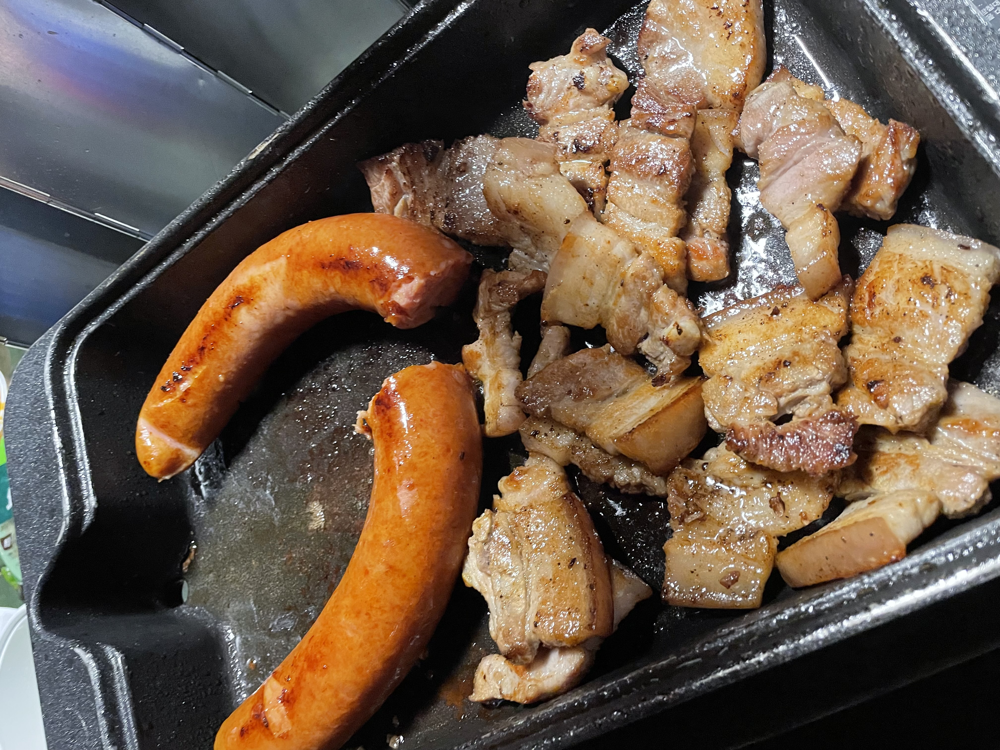
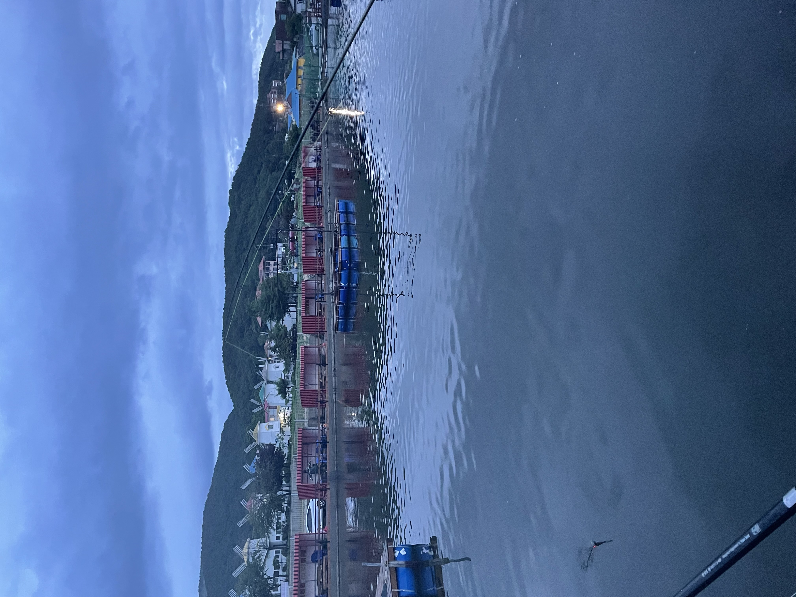
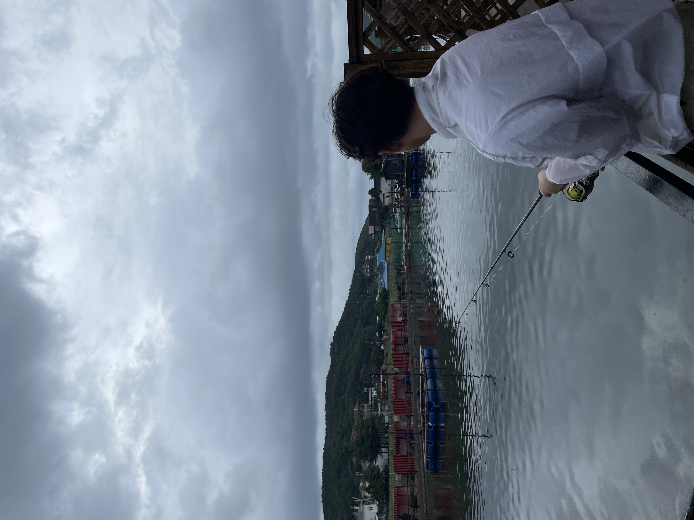
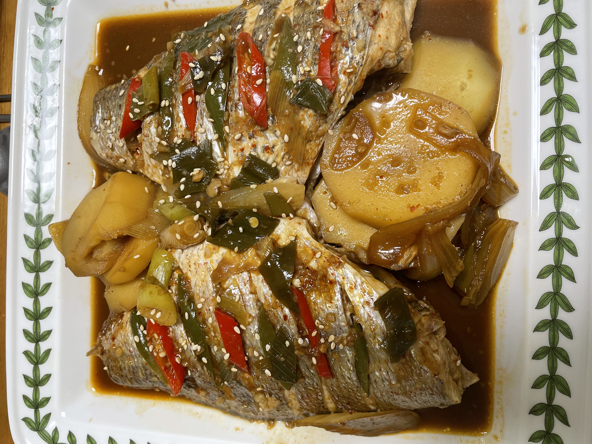

하염없이 기다렸는데
맹-하~!제 첫 일상 소개네요.
오늘은 제가 누군가를 하염없이 기다린 이야기를 소개드리고자 해요.
첫 소개글부터 너무 슬프지않나요?
일단 노래하나 틀고 갈게요. 우리는 때론 살다보면, 누군가를 하염없이 기다릴 때가 있죠,,,
언제올지도 모르는 또는 오는지 조차도 모르는,,, 그런 상황들 말이죠.
저는 이번에 그런 일을 겪었습니다.ㅠ ㄸㄹㄹ.. 때는 6월 27일이네요.
꼭두새벽에 차를 타고 두 시간여를 달려갔습니다.
그렇게 도착한 곳은 서해 강화도 였죠.
기다리는 것도 기다리는 건데, 배가 너무 고프더라고요.
그래서 가리비도 먹구

고기도 구워 먹었어요 ㅎ. 그리고 본격적으로 님을 기다리기 시작했습니다.
제가 님을 기다린 곳을 먼저 보여드릴게요.

참 좋지 않나요?
이때가 아마 새벽 5시가 조금 넘은 시간이라 동이 슬슬 동동 트고 있었어요.
그렇게 님을 하염없이 5시간 가량 더 기다렸는데..

진짜 단 한 녀석도 나타나지 않았어요.
어떻게 그럴 수가 있죠?
잡기는 커녕 뭐 물지도 않은 것 같아요.
'놀러오세요 동물의 숲'에선 분명 쉬웠는데,,,에잉 쯧.
역시 누군가를 기다리는 것은 정말 쉽지 않은 일이에요. 몸과 마음이 다 지친다랄까,,,
대신 빈 손으로 돌아온 것은 아니랍니다!
제 지인이 옆에서 참돔을 많이 잡아서 좀 노나줬거든요.
그래서 그걸 집으로 들고 와서 맛있게 조림을 해 먹었답니다 ㅎㅎ

결말이 이상하다고요?
나도 알아요,,
근데 뭐 어쩌겠어요,,,
글 주변이 없기도 하고,, 첫 게시글이기도 하고,,,
다음엔 조금 더 노력해볼게요 ㅎ
명~바!